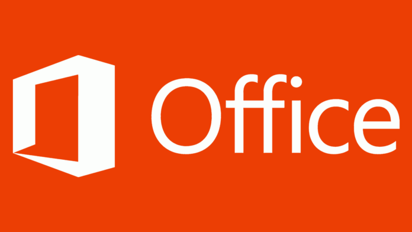
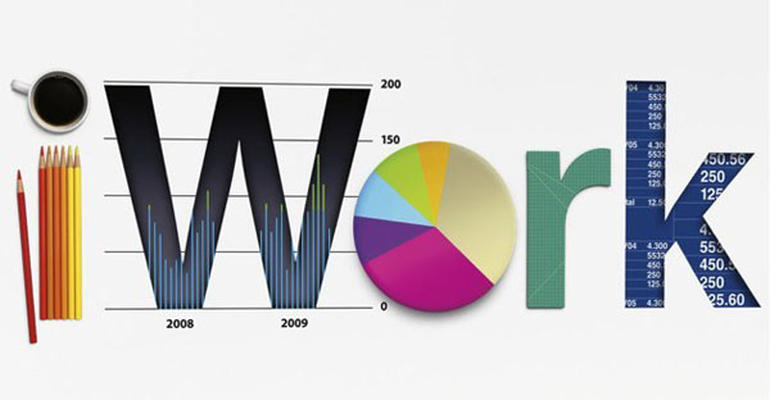

Aplikace jsou uživatelské programy určené pro jeden nebo více specifických účelů. Pro spouštění aplikací je nezbytná přítomnost základního software - operačního systému.
Základní skupiny aplikací
Kancelářské balíky . Symbolický „balík“ programů obvykle tvoří textový procesor, tabulkový procesor, nástroj na tvorbu prezentací, databázový systém, někdy i groupwarové nástroje (systémy organizování času, zajišťování schůzek), grafické editory apod. Vedle komerčních Microsoft Office či Apple iWork existují také balíky OpenOffice nebo WPS Office, dostupné zdarma a pro řadu platforem.
 Grafické aplikace. Oblast grafiky je velmi široká; grafické programy umožňují vytvoření grafických dokumentů přímo v počítači, skenování papírových předloh i zachycení obrazu digitálním fotoaparátem. Dominantní postavení v této oblasti zaujímá profesionální software firmy Adobe (např. Adobe Photoshop, Adobe Illustrator aj.). Mezi oblíbené multiplatformní opensource grafické aplikace patří např. rastrový editor GIMP nebo vektorový Inkscape. Svébytné oblasti počítačové grafiky tvoří programy pro tvorbu animací, rozsáhlé konstrukční systémy CAD (Computer Aided Design) nebo programy DTP (Desktop Publishing) určené pro tvorbu tiskovin.
Multimediální programy. Umožňují vytváření, zpracování a prezentaci multimediálních, tedy především audiovizuálních dat na počítači. Kromě nejrůznějších multimediálních přehrávačů zde můžeme zařadit řadu programů pro editaci digitálního zvuku nebo videa, programy pro tvorbu multimediálních prezentací, výukové programy, ale také rozsáhlou oblast počítačových her.


Programy pro komunikaci v počítačové síti. Slouží pro správu počítačových sítí, vzdálené řízení počítače, přenos a přístup ke vzdáleným souborům a vzdálený tisk, pro připojení vnitřní podnikové sítě (intranet) na síť celosvětovou (Internet) přes poskytovatele Internetu. K základním uživatelským (klientským) aplikacím patří webové prohlížeče, klienty elektronické pošty a groupware (software pro skupinovou práci), prostředky online komunikace (IM - Instant Messaging) a jiné.
Informační a databázové systémy. Informační systémy (IS - information systems) představují komplexní programové vybavení určité instituce nebo firmy. Základem IS jsou obvykle tzv. datové sklady (data warehouse) založené na databázových systémech. Podnikové informační systémy bývají označovány zkratkou ERP (Enterprise Resource Planning) a jsou tvořeny celou řadou dílčích programových modulů (např. moduly pro výrobu, logistiku, správu majetku, účetnictví ...) K lídrům v oblasti informačních i databázových systémů patří velké firmy jako Oracle, Microsoft, IBM, SAP. Kromě komplexních IS jsou vyvíjeny mnohé specializované aplikace pro podporu výrobních procesů, ekonomických transakcí a nejrůznějších jiných pracovních činností.
Malware a antivirové programy. Zatímco malware je počítačový program určený ke vniknutí nebo poškození počítačového systému, cílem antivirových programů (např. AVG, AVAST, ESET, Kaspersky Antivirus atd.) je chránit počítačové systémy před tímto nežádoucím softwarem.
Integrovaná vývojová prostředí. Obvykle jsou označována zkratkou IDE (Integrated Development Environment) a používají je programátoři k vývoji aplikací. Tradičně je tvoří editor s různými pomůckami pro psaní programového kódu, ladicí prostředky, překladače a další nástroje zefektivňující práci vývojářů.